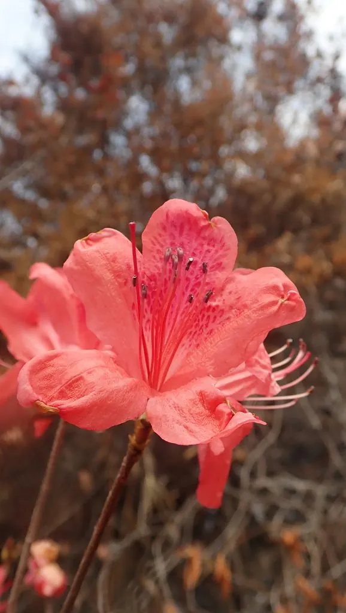

灌木与花木 · 植物界
杜鹃花 Rhododendron simsii

中国十大名花之一，春季开花时满山红遍，是杜鹃花属植物的统称，中国是其现代分布中心与起源地。
- 分类
- 门被子植物门纲木兰纲目杜鹃花目科杜鹃花科属杜鹃花属
- 栖息环境
- 海拔 500–1500 米的山坡灌丛、林缘与溪边，喜凉爽湿润和半阴
- 地理分布
- 中国长江流域及以南地区，江西、湖南、云南等地资源最丰富
- 保护级别
- 暂无评估；部分野生杜鹃种类受保护，禁止滥采
物种志
杜鹃花为落叶或半常绿灌木，高可达 2 m，分枝多，小枝密被褐色糙毛；叶片卵形或椭圆形，全缘，表面疏被毛。花期 4–5 月，花 2–6 朵簇生于枝顶，花冠漏斗形，长 3–5 cm，玫瑰红或鲜红色，上瓣有深色斑点，雄蕊 10 枚；蒴果卵圆形，成熟时开裂，种子细小而多。
杜鹃花原产中国长江流域及以南地区，常见于海拔 500–1500 m 的山坡灌丛与林缘，是中国十大名花之一，也是世界著名的观赏花木。喜凉爽湿润的半阴环境，适宜酸性土壤，忌碱性土与积水，因此栽培时常需配制酸性基质。杜鹃花属全球约 1000 种，中国有 500 余种，是杜鹃花属的现代分布中心；春季山花盛开时形成“映山红”景观，井冈山、麻城等地以此闻名。
形态与习性
- 株高可达 2 m，分枝多而密集
- 花期4–5 月，花玫瑰红或鲜红色
- 果期9–10 月，蒴果卵圆形
- 光照喜半阴，忌强光暴晒
- 水分喜湿润，忌积水
- 土壤酸性土壤，pH 4.5–6.0
- 主要用途园林观赏、盆景、部分种类入药
趣味知识
- 杜鹃花属全球约 1000 种，中国有约 500 种，是杜鹃花的现代分布中心。
- 杜鹃花适宜酸性土壤，在北方碱性水土中容易黄叶，需要专门配土。
- 春天的“映山红”景观就是野生杜鹃花大面积开放形成的，麻城、井冈山最为著名。
- 部分杜鹃花种类含有毒性成分，观赏时不建议采摘或误食。